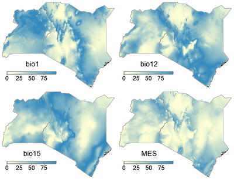
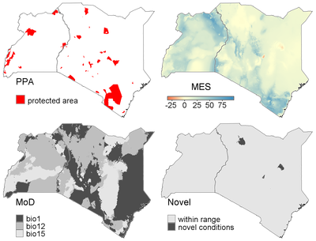
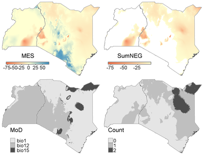

DESCRIPTION
The Multivariate Environmental Similarity (MES) surfaces was proposed
by Elith et al (2010) [1] and originally implemented in the Maxent
software. The MES provides a measure of the proportional distance
of any points (in the projection data) with respect to the range of
individual covariates from the reference data. More precisely, the MES
represents how similar a point is to a reference set of points, with
respect to a set of predictor variables (V1, V2, ...). The values in
the MESS are influenced by the full distribution of the reference
points. So, sites within the environmental range of the reference
points but in relatively unusual environments will have a smaller
value than those in very common environments. See the supplementary
materials of Elith et al. (2010) [1] for more details.
r.mess computes the MES and the individual similarity layers
(IES - the user can select to delete these layers) and, optionally,
several other layers that help to further interpret the MES values.
- the area where for at least one of the variables has a value
that falls outside the range of values found in the reference set
- the most dissimilar variable (MoD)
- the sum of the IES layers where IES < 0. This is similar to
the NT1 measure as proposed by Mesgaran et al. 2014 [2]
- the number of layers with negative values
The user can compare a set of reference / baseline conditions (ref) and
projected / test conditions (proj). For the reference conditions, the
whole region can be used (no reference areas or points are given).
Alternatively, one can define a set of reference/sample points
(presvect) or reference/sample areas (presrast) against which other
areas are to be compared. The projected conditions can be future
conditions in the same area (similarity across time), or conditions in
another area (similarity between two different areas). See the examples
for more details.
NOTES
Note that a mask is taken into account when computing the frequency
distribution of the reference data layers, but is removed when
computing the output layers. This means that instead of using a
raster layer to delimit an reference / sample area (ref_rast,
see example 2), one can use the mask to delimit a reference area,
and compute how similar the areas area outside the mask.
EXAMPLE
The examples below use the bioclimatic variables bio1 (mean annual
temperature), bio12 (annual precipitation), and bio15 (precipitation
seasonality) in Kenya and Uganda. All climate layers (current and
future) are from Worldclim.org.
The protected areas layer includes all nationally designated protected
areas with a IUCN category of II or higher from protectedplanet.net.
Example 1
The simplest case is when only a set of reference data layers (env
) is provided. The multi-variate similarity values of the resulting
map are a measure of how similar conditions in a location are to the
median conditions in the whole region.
>
g.region raster=bio1
r.mess env=bio1,bio12,bio15 output=Ex_01
Thus, in the maps above, the value in each pixel represents how similar
conditions are in that pixel to the median conditions in the entire
region, in terms of mean annual temperature (bio1), mean annual
precipitation (bio12), precipitation seasonality (bio15) and the three
combined (MES).

Example 2
In the second example, conditions in the entire region are compared to
those in the region's protected areas (ppa), which thus serves as the
reference/sample area. See van Breugel et
al.(2015) [3] for an example of how this can be useful.
g.region raster=bio1
r.mess -m -n -i env=bio1,bio12,bio15 ref_rast=ppa output=Ex_02
In the figure below the map with the protected areas, the MES, the most
dissimilar variables, and the areas with novel conditions are given.
They show that the protected areas cover most of the region's annual
precipitation, mean annual temperature, and precipitation seasonality
gradients. Areas with novel conditions can be found in northern Kenya.

Example 3
Similarity between long-term average conditions based on the period
1950-2000 (env) and projections for climate conditions in
2070 under RCP85 based on the IPSL General Circulation Models (
env_proj). No reference points or areas are defined in this
example, so the whole region is used as a reference. Note that this is
equivalent to what the Maxent program does when computing the MESS
layers.
g.region raster=bio1
r.mess env=bio1,bio12,bio15 env_proj=IPSL_bio1,IPSL_bio12,IPSL_bio15
output=Ex_03
Results (below) shows that there is a fairly large area with novel
conditions. Note that in the MES map, the values are based on
the highest negative value across the input variables (here bio1,
bio12, bio15). In the SumNeg map, values of all input variables
are summed when negative. The Count map shows for each raster
cell how many variables have negative similarity scores. Thus, the
values in the MES and SumNeg maps only differ where the
MES of more than one variable is negative (dark gray areas in the
Count map).

REFERENCES
[1] Elith, J., Kearney, M., & Phillips, S.
2010. The art of modelling range-shifting species. Methods in
Ecology and Evolution 1:330-342.
[2] Mesgaran, M.B., Cousens, R.D. & Webber, B.L. (2014) Here be
dragons: a tool for quantifying novelty due to covariate range and
correlation change when projecting species distribution models.
Diversity & Distributions, 20: 1147-1159, DOI: 10.1111/ddi.12209.
[3] van Breugel, P., Kindt, R., Lillesø, J.-P.B., & van Breugel,
M. 2015. Environmental Gap Analysis to Prioritize Conservation Efforts
in Eastern Africa. PLoS ONE 10: e0121444.
AUTHOR
Paulo van Breugel, paulo at ecodiv.earth